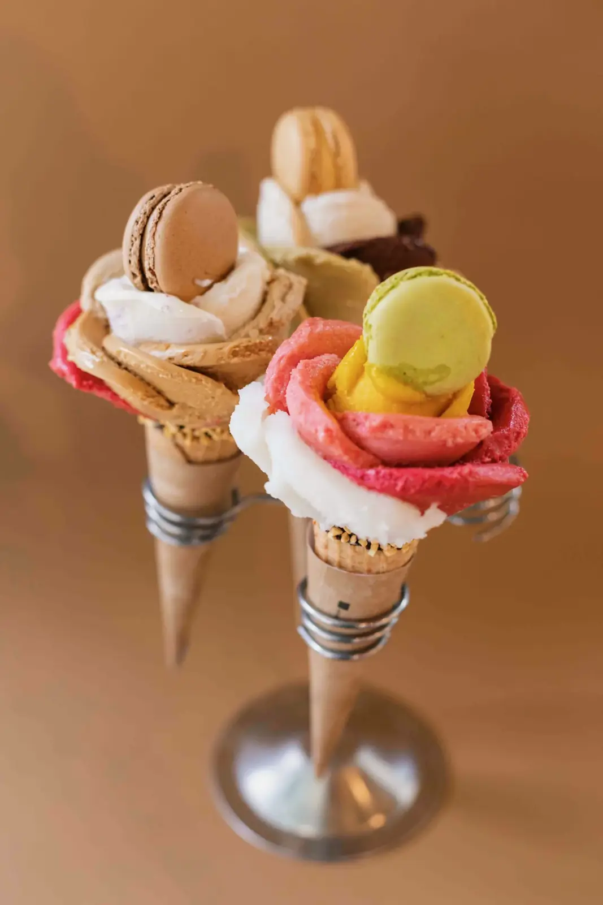
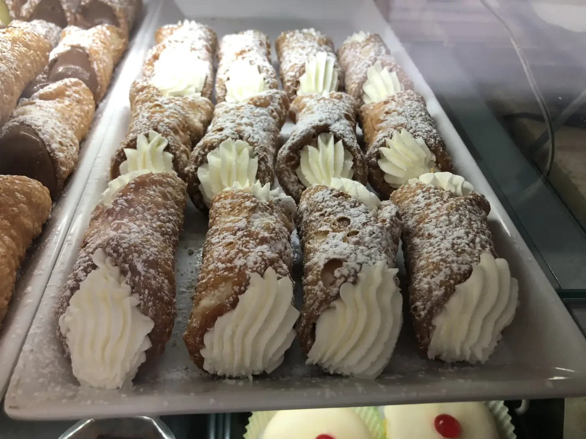
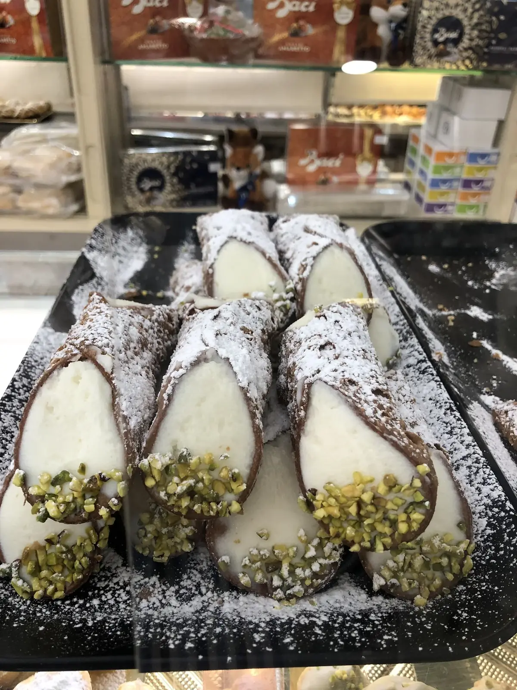

Torta gelato
Due gusti a scelta su pan di Spagna al cacao, decorata con fiori di gelato.
6 persone €26 · 8 persone €32 · 12 persone €44
Torte e cannoli
Torte gelato su ordinazione e cannoli riempiti al momento. Ordina due giorni prima, ritira al banco.

Due gusti a scelta su pan di Spagna al cacao, decorata con fiori di gelato.
6 persone €26 · 8 persone €32 · 12 persone €44
Ricotta, pistacchio o cioccolato. Vassoio da 20 per aperitivi e compleanni.
Vassoio da 20 · €24
Fino a quattro gusti, in una borsa termica. Regge un’ora.
500 g €12 · 1 kg €22Ordina
Confermiamo con un SMS entro due ore, quando siamo aperti. Si paga al ritiro.